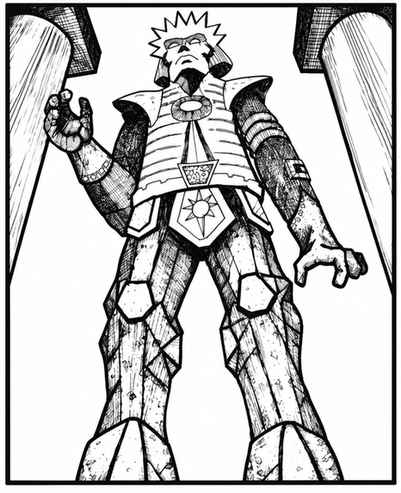

石魔像 · Stone Golem
 |
|
可用魔法典籍，或由 16 级及以上魔法师施展“祈愿术”“任意变形术”“强迫术”与“缓慢术”，创造人形石魔像。材料费为每点生命值 1,000 金币，制造需要 2 个月。
创造者可以控制石魔像，它会理解并服从简单命令，例如攻击、停止、等待或前进；也可以令它保持静止，直到有人做出某个动作将其触发。
除普通攻击外，石魔像每隔一个近战轮，可以对正前方 1 寸内的一名对手施展“缓慢术”。石魔像的力量是肉魔像的两倍，每隔一个近战轮造成 1 点结构伤害。
普通武器无法伤害石魔像；须用附魔加值 +2 或更高的武器才能击中。只有下列法术对它有效：“化石为泥”会令其速度减半，持续 2–12 个近战轮；“化泥为石”会恢复它已受的全部伤害；“化石为肉”会令它在下一个近战轮可被普通攻击伤害。